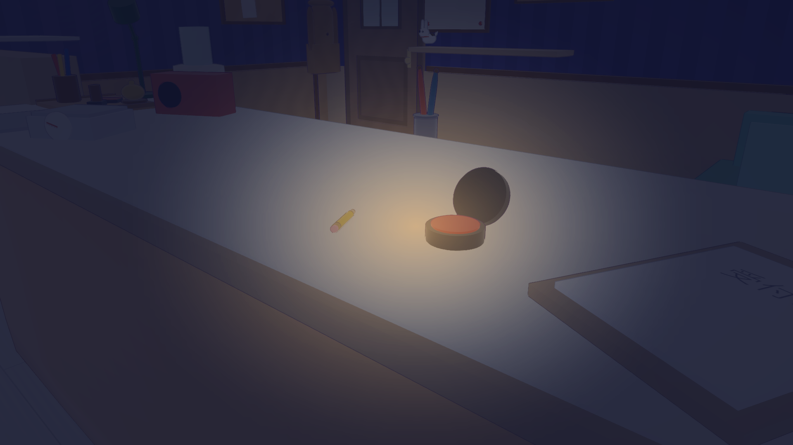
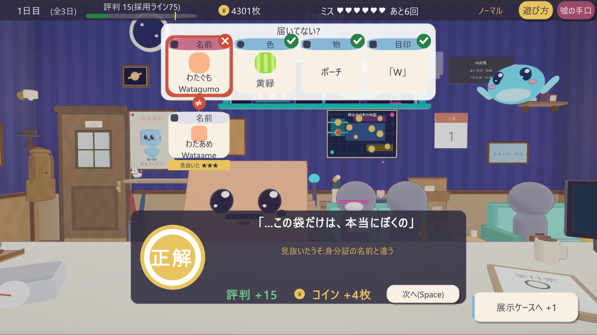
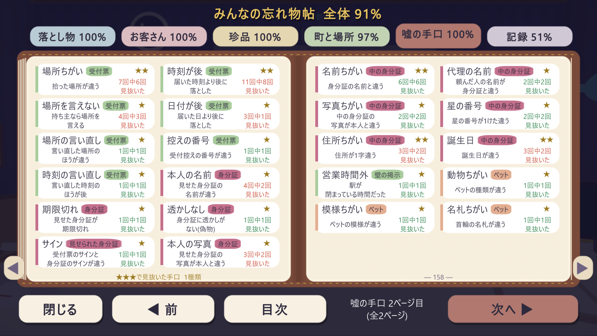
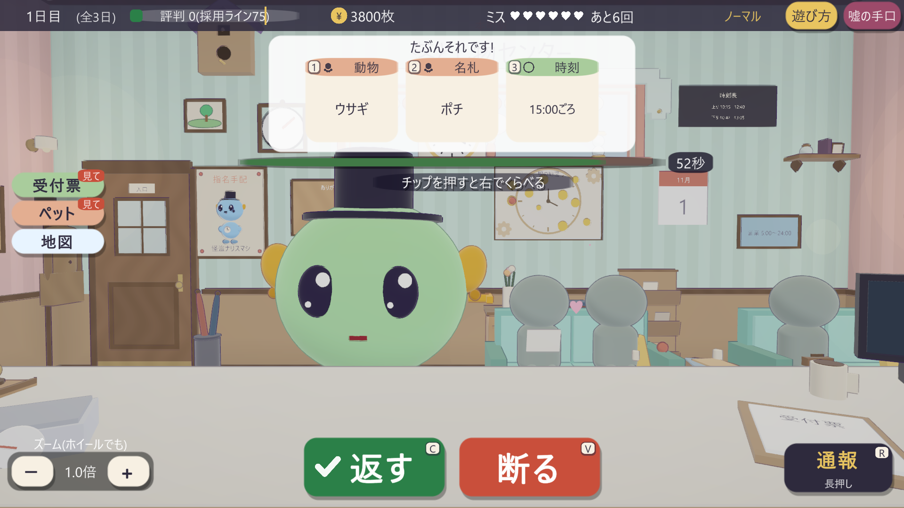

この窓口には、前にもだれかがいた。
背に合わせたいす。引き出しの、短い鉛筆。ひとつの空に浮かぶ、小さな点。物語は読まなくても遊べます。拾うほど、会うほど、1行ずつわかっていきます。
ゲームのメインテーマをお届けします。音量にご注意ください。
音楽は、ページの上と右下のボタンでいつでも止められます。
お知らせ
どんなゲーム？
窓口に来るお客さんはみんな「それ、わたしのです！」と言います。でも、ときどきうそがまじっている。1回10分ほどの受付勤務を、何度でも。
色、中身、落とした場所。お客さんの証言が札になって並びます。
品物を手に取って回し、身分証・防犯カメラ・その日だけの決まり(ルール帳)と照らし合わせます。
「返す」か「断る」。手配書の怪盗が来たら「通報」。評判が採用ラインをこえれば、本採用です。
このゲームだけの味
うそには★がつきます。見る場所がむずかしいほど、ひっかけが多いほど、★が増えます。★★★はめったに出ません。見抜けば金のハンコ。見逃せば「★★★のうそだった」の一言だけが残ります。くやしい1回が、次の1回を呼ぶ。

集める・ながめる


図鑑に集まるのは、うその手口(全46種)だけではありません。ふしぎなお客さん14人、めずらしい落とし物(珍品)40個、記念品14個、町の住人や常連さんたち——拾うほど、会うほど、全86ページが埋まっていきます。
そして係長まで出世すると、「研修室」が開きます。新人4人に授業をして、卒業試験へ。卒業した新人は、助手として窓口で声をかけてくれます。
町ごとの伝説の守り神は、会うまでひみつです。
転勤先めぐり
経験をつむと、ほかの町の落とし物センターへ転勤できます。お客さんの言葉も、とどく落とし物も、流れる曲も、町ごとにちがいます。
フクロウの時計台と、れんがの家なみ。あなたが最初に働く町。
丸い浮き島を、ロープの道でつないだ海の町。落とし物は、だいたい潮のにおい。
ねむり山のふもと。星の線路を、小さな電車がゆく。
ちょうちんの小路と、だんご茶屋の赤い傘。落とし物の中身は、だいたい甘い。
積み木のように重なる夜の街。空には、ホログラムのくじら。
▶ で町の曲を少しだけ聞けます(音が出ます)。

背に合わせたいす。引き出しの、短い鉛筆。ひとつの空に浮かぶ、小さな点。物語は読まなくても遊べます。拾うほど、会うほど、1行ずつわかっていきます。
数字でみる
発売情報
| タイトル | 落とし物センター それ、本当にあなたの? (英題:Rightful Owner) |
|---|---|
| 価格 | 600円(発売から1週間は20%引きの480円) |
| 対応 | Windows(Steam)・日本語・キーボードとマウス(窓口の仕事はマウスだけでOK) |
| 1回の長さ | 約10分の受付勤務を、何度でも |
| ストアページ | 近日公開。公開されたらXでお知らせします |
| 作者 | Mamu$Mad(個人開発) |
個別の連絡や許可はいりません。くわしくは配信ガイドラインをどうぞ。